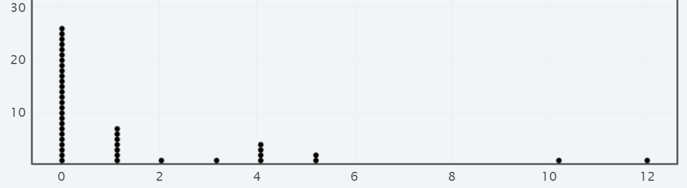
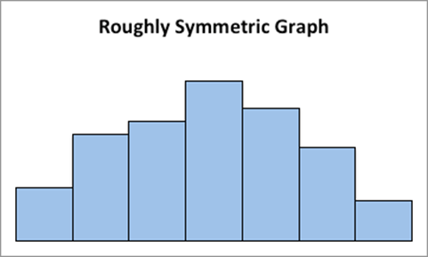

Graph quantitative data with dotplots, boxplots, and histograms.
Describe the shape of a data.
Describe the relationship from scatterplots.
Interpret graphs.
In this course we will use technology to graph quantitative data. So our focus will be on interpreting the information from the graph. The three graphs we will use the most are dotplots, boxplots, and histograms.
Subsection2.2.1Graphing One Quantitative Variable
A dotplot is a graph where the values are listed along the x-axis and each dot represents the case. The total number of dots represents the sample size. The graph below illustrates the number of tattoos for each student from a sample of 43 students.

Interpret Dotplot: From the dotplot we can see there are 43 dots for the sample of 43 students. Clearly 0 tattoos occur most often (26 students). There are 7 students with 1 tattoo, one student with 2 tattoos, one student with 3 tattoos, four students with 4 tattoos, two students with 5 tattoos. There is one student with 10 and one student with 12 tattoos. The data is from Survey 2
A histogram is similar to a bar graph, except we generally have continuous data thus the bars touch. We can adjust the width of the bar to create an interval of values, and the frequency of cases that fall in that interval are shown on the y-axis. Histograms are helpful to describe the shape of the distribution.
Interpret Histogram:The histogram created by StatKey shows the weights, in pounds, from a sample of 42 students. The lightest student weight is 115 pounds while the largest weight is 303 pounds. Most students are between 125 and 225 pounds. The width of each interval is 25 pounds creating 9 subdivisions. There are 12 students whose weights are between 150 and 175 pounds. The mean weight is 171.1 pounds. Data found in Survey1.
A boxplot splits the data into four sections with the same number of cases in each region. This helps to see the spread of the values. Boxplot are also known as box-and-whisker plots because the box represents the middle 50% of the data and there is a whisker to the smallest value and a whisker to the largest value.
Interpret Boxplot: The boxplot created by StatKey shows the weights, in pounds, from a sample of 42 students. The minimum student weight is 115 pounds while the maximum weight is 303 pounds. Most students are between 140 and 200 pounds, represented by the box for the middle 50% of the student weights. The middle line represents the median of 163.5 pounds. Data found in Survey 1.
An outlier is a data value that is much larger or smaller than the rest of the data. This may indicate an unusual value. The student weight of 303 is an outlier as indicated by the star in the boxplot.
Another graph you may occasional see is the ogive, also know as the cumulative frequency graph. At the end of each boundary you plot the total number of cases to that point. This is always an increasing fucntion. If you think of your accumulated credit hours for college, if you plot the total number of credits have have completd at the end of each semester you just created an ogive. The graph always starts at zero.
Shapes of Distributions
When we display numerical data in a histogram we often look at its overall shape. If the data has similar frequencies, the bars are about the same size. This is knows as a uniform distribution. The center of the distribution is around the center of the middle intervals.
A distribution the is more bell-shaped, meaning most of the data is in the center with few on the tails and appears symmetric, is refered to as normally distributed. Symmeteric refers to imagining folding the graph in half about the middle and the two sides will align. If one of the tails is longer than the other, we refer to it as being skewed.

If the data tends to cluster on the right side, and we see a few values on the left side, this is known as left skewed since the tail goes to the left of the data. This indicates the mean will be left of the median.
If the data tends to cluster on the left side, and we see a few values on the rigt side, this is known as right skewed since the tail goes to the right of the data. This indicates the mean will be right of the median.
Sometimes the graph can have multiple bumps showing certain values occur more often than others. This can be an example of bimodal (meaning two values occur more often than others).
See the section for Graphing with StatKey for uploading one quantitative variable into StatKey to graph the data.
Subsection2.2.2Graphing Two Quantitative Variables
There are times when we want to determine whether a relationship exists between two quantitative variables. This can visually be seen with a scatterplot where the data are plotted as points. The independent variable, also known as the explanatory variable, is scaled along the x-axis and the dependent variable, also known as the response variable, is scaled along the y-axis. Once the data is plotted as paired points (x,y) we can describe the pattern between the two variables.
Correlation is a statistical method used to determine whether a relationship between two quantitative variables exists.
For now, we will focus on simple linear relationships. If the pattern shows that the y-values are increasing as the x-values increase, then we have a positive correlation. If the points form an approximate line, then it’s a positive linear relationship. A negative correlation exists when one variable increase while the other variable decreases. If the points form a line, then it’s a negative linear relationship. If the points appear more random and there is no pattern, then there is typically a weak or no correlation thus no relationship exists between the two variables.
We use the correlation coefficient to describe the strength of the linear relationship as well as its direction (as positive or negative). The sample correlation coefficient value is designated as r and the population value as ρ (rho). The range of values is from -1 to +1. If there is a strong positive linear relationship, the value of r is closer to +1. If there is a strong negative linear relationship, the value of r is closer to -1. If there is no linear relationship or if there is a weak relationship, the value ofr is close to 0. When the correlation values are close to +0.5 or -0.5 we will call that a moderate relationship.
First, let’s use some intuitive reasoning to determine if a relationship may exist. For the following situations, do you think there is a positive relationship, negative relationship or no relationship?
We are going to investigate if there is a relationship between a person’s height and his/her shoe size using the first day survey. If we know a person’s height, are we able to predict his/her shoe size? Or if we know a person’s shoe size, can we predict his/her height? Let’s find out. We will use technology to help us create the scatterplot and find the correlation value.
Open StatKey, under the left column Descriptive Statistics and Graph, select Two Quantitative Variables. Click on theUpload File button and find the saved data file ClassSurvey1 on your computer and click Open on the bottom right.
Identify the two quantitative variables, select the x-variable first, Shoe size, and then the y-variable, Height, and then click Ok at the bottom right.
The scatterplot shows each pair of points, such as size 10 shoe with the height of 66 inches, as (10,66). If we look at the pattern, we see a positive correlation. As the shoe sizes increase the student heights are also increasing.
Figure2.2.1.Image of Scatterplot for Shoe Size and Height
Interpreting graph: From the table the Correlation value is 0.913 which tells us this is a strong positive linear relationship, which also matches with the positive slope of 2.014. The scatterplot is scaled based on your values. If we extend the graph to shoe size 0, we get the y-intercept of 48.396 inches.
If you click on the Switch Variables on the top right, you can switch the x-axis and y-axis. The correlation value will be the same 0.913 but the slope and y-intercept will change with the independent variable on the x-axis. We still have a positive slope which is now 0.414 and if we extend the graph to the height of 0 inches, we get the y-intercept of size -18.683. This scatterplot tells us that as the heights of the students increase, their shoe sizes tend to increase as well.
Figure2.2.2.Image of Scatterplot for Height and shoe size
A few words of warning: just because a correlation between variables exists it does not indicate one variable causes the other to occur. It is possible a third variable, known as a lurking variable, may account for the correlation. Just because a student is tall, does not cause their shoe size to be large. Just as having a larger shoe size does not cause a student to be taller. When working with observational studies, we cannot assume causation even if there is a strong correlation between variables.
Practice
Now let’s investigate the type of relationship between a person’s weight and height. Do you think this will be positive, negative, or no relationship? Click on the Change Columns to change the variables and describe the nature of the relationship from the scatterplot and the correlation coefficient.
Figure2.2.3.Image of Scatterplot for Weight and Height
Example2.2.4.Correlation Coefficient.
Compute the correlation coefficient between weight and height.
Solution.
Correlation Coefficient r = 0.623.
Example2.2.5.Type of Relationship.
Identify the type of relationship between weight and height.
Solution.
There’s a moderate positive linear relationship.
Example2.2.6.Describe the Relationship.
Describe the relationship between weight and height.
Solution.
As student’s weights increase, their heights also increase.
Example2.2.7.Slope.
Identify the slope when x= weight and y=height.
Solution.
Slope = 0.077 is positive.
Example2.2.8.Y-intercept.
Identify the y-intercept when x=weight and y=height.
Solution.
The y-intercept = 54.692 inches.
Example2.2.9.Regression Equation.
Identify the regression equation where x= weight and y=height.
Solution.
Height = 0.077(weight)+54.692 or \(y=0.077x+54.692 \text{.}\)